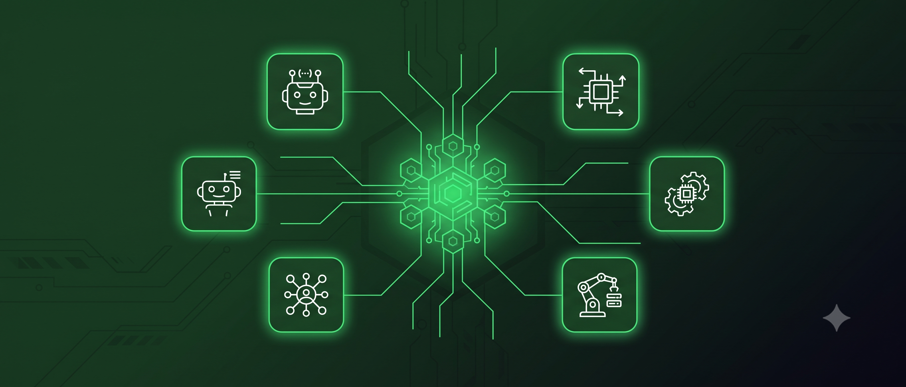
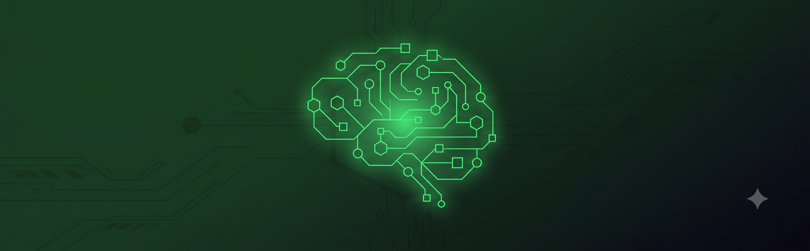

A complete Supabase blueprint: creators list specialized AI agents, buyers purchase and chat with them in real time, powered by pgvector search, Edge Functions, and free-tier LLM APIs.
Think of this as a mini App Store — except instead of mobile apps, creators publish specialized AI agents ("SEO Writer Agent", "Code Review Agent", "Contract Summarizer Agent"). Buyers browse, purchase, and chat directly with an agent to get a task done, watching the response stream in live.
What makes this build interesting is that Supabase alone covers almost the entire backend — database, auth, vector search, real-time streaming, file storage, and event-driven webhooks — leaving only the LLM inference and payment processing to external APIs. This guide wires all of it together correctly, including a few gotchas that trip up most first attempts.

Six tables cover the whole marketplace. Auth is handled by Supabase's built-in auth.users, so we only add what's specific to the app.
-- Enable the vector extension once per project
create extension if not exists vector;
-- Public profile, one row per auth.users entry (creator or buyer)
create table profiles (
id uuid primary key references auth.users(id) on delete cascade,
display_name text not null,
is_creator boolean default false,
stripe_account_id text, -- for creators receiving payouts
created_at timestamptz default now()
);
-- The agents creators list for sale
create table agents (
id uuid primary key default gen_random_uuid(),
creator_id uuid references profiles(id) not null,
name text not null,
description text not null,
system_prompt text not null, -- NEVER exposed to buyers, only read server-side
price_cents int not null default 0,
avatar_url text,
embedding vector(1024), -- matches nv-embedqa-e5-v5 output size
created_at timestamptz default now()
);
-- Purchase records — gate access to chatting with an agent
create table purchases (
id uuid primary key default gen_random_uuid(),
buyer_id uuid references profiles(id) not null,
agent_id uuid references agents(id) not null,
stripe_payment_intent text unique,
amount_cents int not null,
created_at timestamptz default now()
);
-- Chat sessions and finished messages (not individual streamed tokens)
create table chat_sessions (
id uuid primary key default gen_random_uuid(),
buyer_id uuid references profiles(id) not null,
agent_id uuid references agents(id) not null,
created_at timestamptz default now()
);
create table chat_messages (
id uuid primary key default gen_random_uuid(),
session_id uuid references chat_sessions(id) not null,
role text not null check (role in ('user', 'agent')),
content text not null,
created_at timestamptz default now()
);
-- Reviews trigger the creator-payout notification webhook
create table reviews (
id uuid primary key default gen_random_uuid(),
agent_id uuid references agents(id) not null,
buyer_id uuid references profiles(id) not null,
rating int not null check (rating between 1 and 5),
comment text,
created_at timestamptz default now()
);
-- Index for fast cosine similarity search over agent descriptions
create index on agents using ivfflat (embedding vector_cosine_ops) with (lists = 100);This is what actually enforces "buyers can only chat with agents they've purchased" and "creators can only edit their own agents." Without RLS enabled, any authenticated user can read or write any row via the Supabase client — the frontend has no enforcement power on its own.
alter table agents enable row level security;
alter table purchases enable row level security;
alter table chat_sessions enable row level security;
alter table chat_messages enable row level security;
alter table reviews enable row level security;
-- Anyone can browse agent listings (name, description, price, avatar)
create policy "Public can view agent listings"
on agents for select
using (true);
-- Creators can list new agents
create policy "Creators can create agents"
on agents for insert
with check (auth.uid() = creator_id);
-- Only the creator can update their own agent
create policy "Creators manage their own agents"
on agents for update
using (auth.uid() = creator_id);
-- Buyers see only their own purchases
create policy "Buyers view their own purchases"
on purchases for select
using (auth.uid() = buyer_id);
-- A chat session is only visible to the buyer who owns it
create policy "Buyers view their own chat sessions"
on chat_sessions for select
using (auth.uid() = buyer_id);
-- A buyer can start a new chat session for themselves. This alone doesn't
-- grant access to chat — run-agent still separately checks `purchases`
-- before it will actually talk to the agent.
create policy "Buyers can start chat sessions"
on chat_sessions for insert
with check (auth.uid() = buyer_id);
-- Messages inherit access from their parent session
create policy "Buyers view messages in their sessions"
on chat_messages for select
using (
session_id in (
select id from chat_sessions where buyer_id = auth.uid()
)
);
-- Reviews are public to read (buyers browsing agents need to see ratings) —
-- this table had RLS turned on above with no policies attached, which
-- would otherwise block every client-side read and write on it.
create policy "Public can view reviews"
on reviews for select
using (true);
-- Only a buyer who actually purchased the agent can review it
create policy "Buyers can review agents they purchased"
on reviews for insert
with check (
auth.uid() = buyer_id
and exists (
select 1 from purchases
where purchases.buyer_id = auth.uid()
and purchases.agent_id = reviews.agent_id
)
);When a buyer types "I need something to clean up messy spreadsheet data," this Edge Function embeds that query and finds the closest agents by cosine similarity — the same technique from our RAG Chat Bot guide, applied to agent descriptions instead of PDF chunks.
// supabase/functions/match-agent/index.ts
import { createClient } from 'jsr:@supabase/supabase-js@2';
Deno.serve(async (req) => {
const { query } = await req.json();
const supabase = createClient(
Deno.env.get('SUPABASE_URL')!,
Deno.env.get('SUPABASE_SERVICE_ROLE_KEY')!
);
// 1. Embed the buyer's search query via NVIDIA's free API
const embedRes = await fetch('https://integrate.api.nvidia.com/v1/embeddings', {
method: 'POST',
headers: {
'Authorization': `Bearer ${Deno.env.get('NVIDIA_API_KEY')}`,
'Content-Type': 'application/json',
},
body: JSON.stringify({
input: [query],
model: 'nvidia/nv-embedqa-e5-v5',
input_type: 'query', // use 'passage' when embedding agent descriptions at creation time
}),
});
if (!embedRes.ok) {
return new Response(JSON.stringify({ error: 'Embedding request failed' }), { status: 502 });
}
const embedData = await embedRes.json();
const queryVector = embedData.data[0].embedding;
// 2. Cosine similarity search via a Postgres RPC function (see below)
const { data, error } = await supabase.rpc('match_agents', {
query_embedding: queryVector,
match_threshold: 0.5,
match_count: 5,
});
if (error) {
return new Response(JSON.stringify({ error: error.message }), { status: 500 });
}
return new Response(JSON.stringify({ matches: data }), {
headers: { 'Content-Type': 'application/json' },
});
});The RPC function it calls — this has to live in Postgres, not application code, so the similarity math runs next to the data:
create or replace function match_agents (
query_embedding vector(1024),
match_threshold float,
match_count int
)
returns table (id uuid, name text, description text, price_cents int, similarity float)
language sql stable
as $$
select
agents.id,
agents.name,
agents.description,
agents.price_cents,
1 - (agents.embedding <=> query_embedding) as similarity
from agents
where 1 - (agents.embedding <=> query_embedding) > match_threshold
order by agents.embedding <=> query_embedding
limit match_count;
$$;
Before a buyer's first message can hit run-agent, a chat_sessions row has to exist — this happens client-side, directly against Supabase, guarded by the INSERT policy above (not an Edge Function, since no privileged logic is needed yet):
// Called once when a buyer opens a purchased agent's chat for the first time
const { data: session, error } = await supabase
.from('chat_sessions')
.insert({ buyer_id: user.id, agent_id })
.select('id')
.single();
// session.id is then passed as `sessionId` on every run-agent call belowrun-agentThis is the function a buyer's chat message hits. It confirms they've actually purchased the agent and that the session belongs to them, pulls the hidden system prompt server-side, streams a response from Groq, and broadcasts each token live — without hammering the database.
// supabase/functions/run-agent/index.ts
import { createClient } from 'jsr:@supabase/supabase-js@2';
Deno.serve(async (req) => {
const authHeader = req.headers.get('Authorization')!;
const { sessionId, agentId, message } = await req.json();
const supabase = createClient(
Deno.env.get('SUPABASE_URL')!,
Deno.env.get('SUPABASE_SERVICE_ROLE_KEY')!
);
// 1. Identify the caller from their JWT
const { data: { user } } = await supabase.auth.getUser(
authHeader.replace('Bearer ', '')
);
if (!user) return new Response('Unauthorized', { status: 401 });
// 2. Verify purchase — this is the real access gate, RLS on `agents`
// allows public SELECT so this check can't be skipped by trusting the client
const { data: purchase } = await supabase
.from('purchases')
.select('id')
.eq('buyer_id', user.id)
.eq('agent_id', agentId)
.maybeSingle();
if (!purchase) {
return new Response(JSON.stringify({ error: 'Agent not purchased' }), { status: 403 });
}
// 2b. Verify the session actually belongs to this buyer. Skipping this
// would let anyone who obtains a sessionId — leaked in a log, guessed,
// shared in a screenshot — read and inject messages into someone else's
// chat history, purchase check or not.
const { data: session } = await supabase
.from('chat_sessions')
.select('id')
.eq('id', sessionId)
.eq('buyer_id', user.id)
.maybeSingle();
if (!session) {
return new Response(JSON.stringify({ error: 'Invalid session' }), { status: 403 });
}
// 3. Fetch the hidden system prompt (service role bypasses RLS here, on purpose)
const { data: agent } = await supabase
.from('agents')
.select('system_prompt')
.eq('id', agentId)
.single();
// 4. Save the buyer's message immediately
await supabase.from('chat_messages').insert({
session_id: sessionId, role: 'user', content: message,
});
// 5. Stream the response from Groq and broadcast tokens live —
// NOT written to the DB one row per token, only the finished message is.
// channel.send() here works without calling .subscribe() first — Realtime
// supports fire-and-forget broadcast sends, which is what a stateless
// Edge Function needs since it can't hold a websocket connection open.
const channel = supabase.channel(`chat-${sessionId}`);
const groqRes = await fetch('https://api.groq.com/openai/v1/chat/completions', {
method: 'POST',
headers: {
'Authorization': `Bearer ${Deno.env.get('GROQ_API_KEY')}`,
'Content-Type': 'application/json',
},
body: JSON.stringify({
model: 'llama-3.3-70b-versatile',
messages: [
{ role: 'system', content: agent!.system_prompt },
{ role: 'user', content: message },
],
stream: true,
}),
});
// Without this check, a failed call (bad key, rate limit, model error)
// returns an error body that isn't an SSE stream — the parsing loop
// below would silently produce an empty reply instead of surfacing why.
if (!groqRes.ok || !groqRes.body) {
const errText = await groqRes.text();
return new Response(JSON.stringify({ error: `Groq request failed: ${errText}` }), { status: 502 });
}
let fullReply = '';
const reader = groqRes.body.getReader();
const decoder = new TextDecoder();
while (true) {
const { done, value } = await reader.read();
if (done) break;
const chunk = decoder.decode(value);
for (const line of chunk.split('\n')) {
if (!line.startsWith('data: ') || line.includes('[DONE]')) continue;
const json = JSON.parse(line.slice(6));
const token = json.choices?.[0]?.delta?.content;
if (token) {
fullReply += token;
await channel.send({
type: 'broadcast',
event: 'token',
payload: { token },
});
}
}
}
// 6. Persist only the finished message
await supabase.from('chat_messages').insert({
session_id: sessionId, role: 'agent', content: fullReply,
});
return new Response(JSON.stringify({ reply: fullReply }), {
headers: { 'Content-Type': 'application/json' },
});
});On the frontend, subscribe to the same broadcast channel to render tokens as they arrive:
// nextjs-app/app/chat/[sessionId]/page.jsx (relevant excerpt)
'use client';
import { useEffect, useState } from 'react';
import { createClient } from '@/lib/supabase-client';
export function useAgentStream(sessionId) {
const [streamedText, setStreamedText] = useState('');
useEffect(() => {
const supabase = createClient();
const channel = supabase
.channel(`chat-${sessionId}`)
.on('broadcast', { event: 'token' }, ({ payload }) => {
setStreamedText((prev) => prev + payload.token);
})
.subscribe();
return () => { supabase.removeChannel(channel); };
}, [sessionId]);
return streamedText;
}Two buckets with very different access rules — public for anything meant to be browsed, private with time-limited links for anything a buyer paid for.
-- Public bucket: agent avatar images, freely viewable
insert into storage.buckets (id, name, public) values ('avatars', 'avatars', true);
-- Private bucket: generated deliverables (CSV reports, images, etc.)
insert into storage.buckets (id, name, public) values ('deliverables', 'deliverables', false);
-- Only the buyer who owns the purchase can read their deliverable
create policy "Buyers access their own deliverables"
on storage.objects for select
using (
bucket_id = 'deliverables'
and (storage.foldername(name))[1] = auth.uid()::text
);// Generating a time-limited link for a paid deliverable
const { data, error } = await supabase.storage
.from('deliverables')
.createSignedUrl(`${userId}/report-${purchaseId}.csv`, 60 * 10); // expires in 10 minTwo Edge Functions: one creates the Checkout session, the other listens for Stripe's confirmation — and actually checks that the event is genuinely from Stripe before trusting it.
// supabase/functions/stripe-webhook/index.ts
import Stripe from 'npm:stripe@17';
import { createClient } from 'jsr:@supabase/supabase-js@2';
const stripe = new Stripe(Deno.env.get('STRIPE_SECRET_KEY')!);
const webhookSecret = Deno.env.get('STRIPE_WEBHOOK_SECRET')!;
Deno.serve(async (req) => {
const signature = req.headers.get('Stripe-Signature')!;
const body = await req.text();
let event;
try {
// This is the check that stops a forged "payment succeeded" request
// from unlocking a paid agent for free.
event = await stripe.webhooks.constructEventAsync(body, signature, webhookSecret);
} catch (err) {
return new Response(`Webhook signature verification failed`, { status: 400 });
}
if (event.type === 'checkout.session.completed') {
const session = event.data.object;
const supabase = createClient(
Deno.env.get('SUPABASE_URL')!,
Deno.env.get('SUPABASE_SERVICE_ROLE_KEY')!
);
await supabase.from('purchases').insert({
buyer_id: session.metadata.buyer_id,
agent_id: session.metadata.agent_id,
stripe_payment_intent: session.payment_intent,
amount_cents: session.amount_total,
});
}
return new Response(JSON.stringify({ received: true }));
});A new 5-star review should notify the creator. Supabase's Database Webhooks can call any HTTP endpoint on INSERT — but as flagged earlier, it can't call Discord directly. This relay function reshapes the payload first.
// supabase/functions/discord-relay/index.ts
// Configure a Database Webhook on `reviews` (event: INSERT) to POST here.
Deno.serve(async (req) => {
const payload = await req.json(); // Supabase's webhook shape: { type, table, record, ... }
const review = payload.record;
if (review.rating < 5) return new Response('ok'); // only ping on 5-star reviews
// Discord expects a specific JSON body — this is the translation step
// that a direct Supabase-to-Discord webhook would be missing.
await fetch(Deno.env.get('DISCORD_WEBHOOK_URL')!, {
method: 'POST',
headers: { 'Content-Type': 'application/json' },
body: JSON.stringify({
content: `⭐️⭐️⭐️⭐️⭐️ New 5-star review on agent \`${review.agent_id}\`: "${review.comment ?? ''}"`,
}),
});
return new Response('ok');
});Every key below is an Edge Function secret (supabase secrets set KEY=value), never a value shipped to the browser:
| Secret | Used by | Notes |
|---|---|---|
SUPABASE_SERVICE_ROLE_KEY | match-agent, run-agent, stripe-webhook | Bypasses RLS — server-side only, never exposed to the client. |
NVIDIA_API_KEY | match-agent | Free tier, nvapi- prefix, expires every 6 months. |
GROQ_API_KEY | run-agent | Free tier, rate-limited per model — add retry/backoff for production traffic. |
STRIPE_SECRET_KEY / STRIPE_WEBHOOK_SECRET | stripe-checkout, stripe-webhook | Webhook secret is what makes signature verification possible — get it from the Stripe Dashboard, not the API key itself. |
DISCORD_WEBHOOK_URL | discord-relay | Treat as a secret — anyone with this URL can post to your channel. |
Four checks, not one: RLS policies stop a buyer from ever reading another agent's system_prompt or another buyer's chat history at the database level; run-agent independently re-checks the purchases table before running any prompt; it also confirms the sessionId actually belongs to the caller, so a leaked or guessed session ID can't be used to read or inject into someone else's chat; and Stripe's signature check stops anyone from faking a purchase in the first place. Remove any one of these and the others aren't enough on their own.